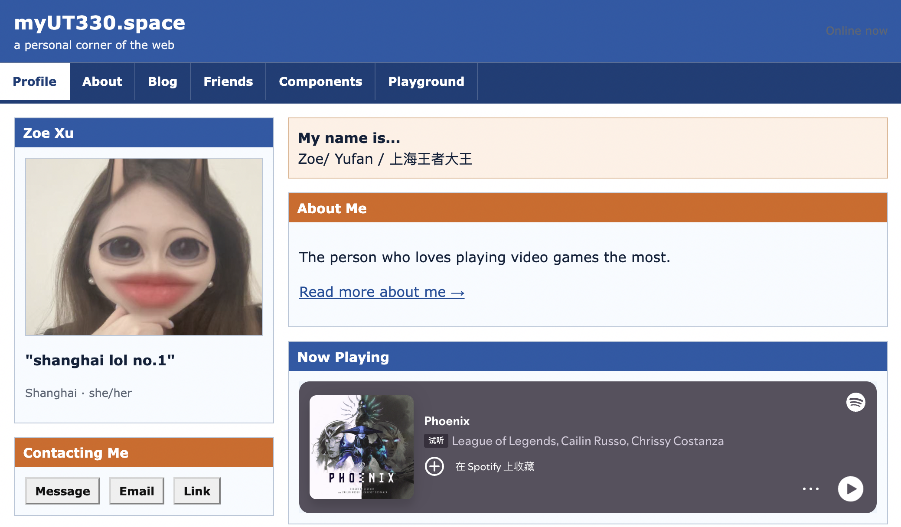
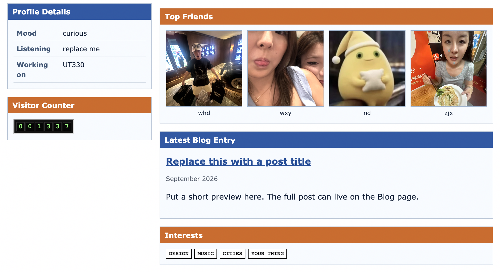

Filling a social profile page
· Week 2
This week I worked on a small personal profile website. The starting point was a MySpace-style template, and the task was to make it feel like my page without pretending every blank section already had a finished answer.


What I changed
I changed the profile name to Zoe Xu, added Shanghai and she/her, connected
the email button to my real school email, and replaced the default profile
image with my own photo. The status line became
shanghai lol no.1
, and the name line became
Zoe/ Yufan / 上海王者大王
.
I also filled the page with things that actually match me: a Spotify embed for Phoenix by League of Legends, four friend photos, and an About Me sentence about being the person who loves video games the most.
What I kept unfinished
Some parts stayed close to the starter template on purpose. I did not want the page to invent a personality for me just because the design had empty boxes. That made the work more about choosing what belongs on a personal page and what can stay as a placeholder for later.
What was tricky
The hardest part was making the page personal without making it messy. Every new image had to live inside the project folder, not on my Desktop, or the website would break as soon as the folder moved. I also learned that an embedded player is not just content; it changes the size and rhythm of the whole section around it.
What I learned
A profile page looks simple, but it has many small design decisions: identity, privacy, links, images, placeholders, and how much personality is too much. The page became better when I stopped trying to fill every box and started deciding which boxes deserved real information.